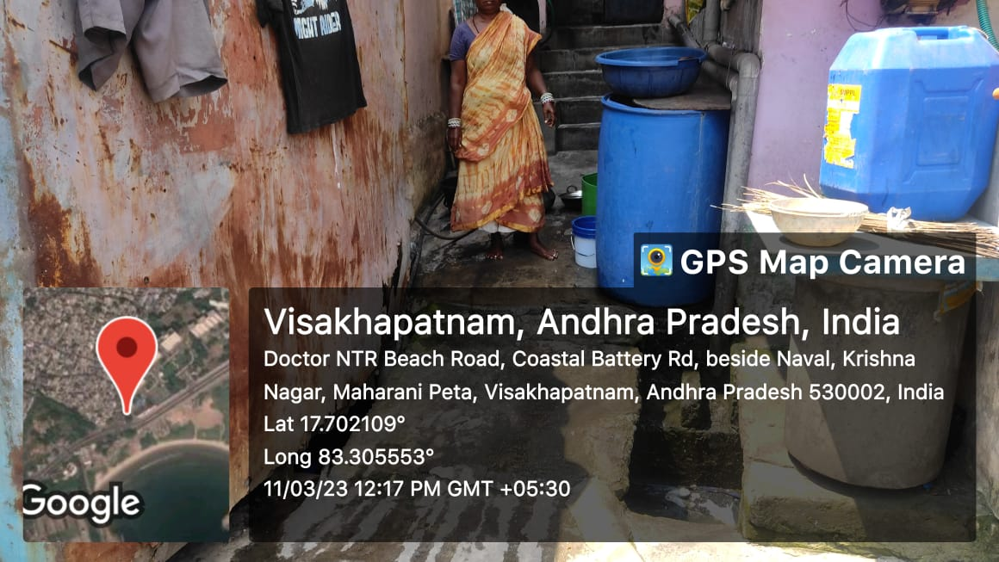

KrishnaNagar

Krishna Nagar is a slum settlement located in the Greater Visakhapatnam Municipal Corporation (GVMC) area of Visakhapatnam, a city in the state of Andhra Pradesh, India. The settlement is characterized by a lack of basic amenities such as proper sanitation, clean water supply, and adequate housing. The residents of the slum are mostly from low-income families who work in nearby factories or as daily wage laborers.
Major Problems
- Limited educational opportunities: Many children in the slum area do not attend school due to poverty and lack of resources. This can perpetuate the cycle of poverty and limit their future prospects.
- Unemployment: Many residents in Gajuwaka are daily wage workers who rely on casual labour for their livelihood. With the ongoing COVID-19 pandemic and the resulting economic slowdown, many have lost their jobs and are struggling to make ends meet.
- Inadequate sanitation: Lack of proper sanitation facilities and waste management infrastructure is a significant issue in the slum area. Open defecation is common, and garbage is often piled up on the streets, leading to unhygienic conditions and potential health hazards.
- Vulnerability to Natural Disasters: The slum is often situated in low-lying areas, making it more vulnerable to natural disasters like floods and cyclones. This can lead to property damage and loss of life for the residents.